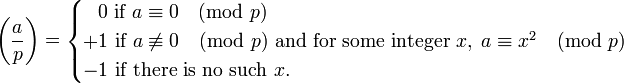

The Jacobi symbol is a generalization of the Legendre symbol. Introduced by Jacobi in 1837,[1] it is of theoretical interest in modular arithmetic and other branches of number theory, but its main use is in computational number theory, especially primality testing and integer factorization; these in turn are important in cryptography.

There were no other javascript implementation of Jacobi symbol calculations with Big Integers. There was one made by "richmann" but it only supported small integers (max 7 numbers long)
So this is my implementation of Jacobi Symbol for large numbers. Javascript is not able to deal with big integers so I had to use Tom Wus JSBN library.
p
(outputs either 1 or -1, check your browsers javascript console for the full calculation) * if it outputs 0 it means the p is not odd prime
Jeevan Sivagnanasuntharam
Sanjeevan@outlook.com
07.03.2013
Questions are welcome :)